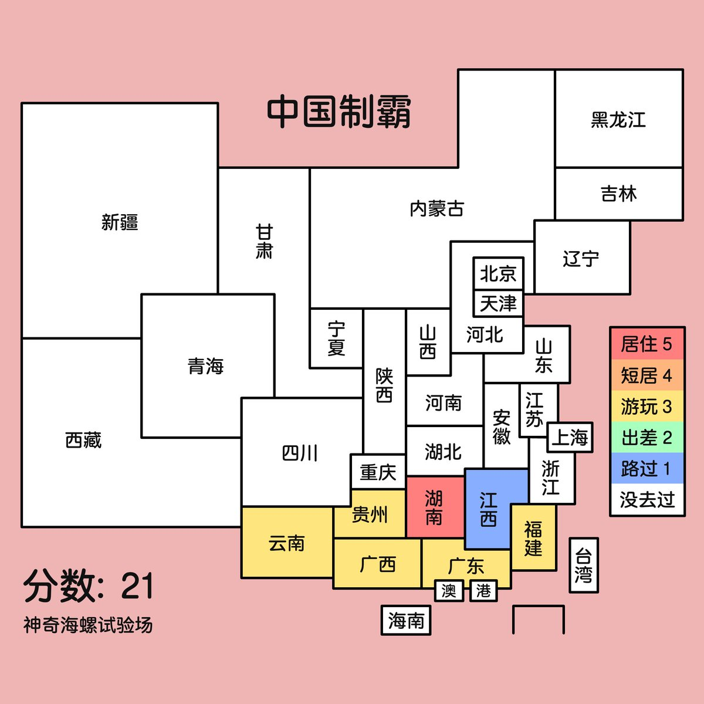

大狐帝国史官邹智萱（笔名段歌文）
@Rococo90933671
分享一下自己贫瘠的出省经历：
2012年10月国庆假去了广西桂林
大概是2013年去了贵州镇远古镇
2014年暑假去了广东沿海（离香港最近的一次，当时爸爸开车经过香港的高速路口还说，那里不能随便进去）
2022年7月途径江西去了福建泉州和厦门（离台湾最近的一次）
2022年8月人生第一次也是目前唯一一次没有父母陪同，和高中玩得好的一个同学坐火车途径贵州去了云南大理
2023年4月底去了广西北海
2024年2月因为去找妈妈的一个亲戚去了贵州遵义
希望有生之年可以多走一些地方。现在很内耗，自己真的辜负了自己，很多想体验的事情都没体验过
